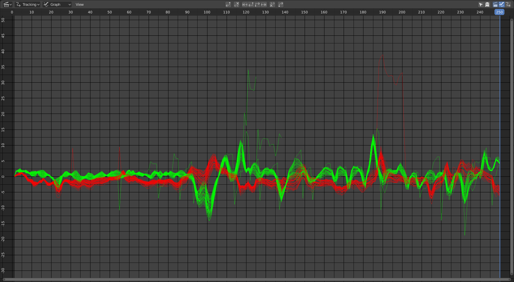

曲线视图¶

曲线视图。¶
简介¶
图形或曲线视图有许多基于线条颜色的用途。图上的红色和绿色线条显示给定帧处的跟踪器速度。绿色是垂直运动，红色是水平运动。因此，第一帧将始终为零。
蓝线是当你点击电影胶片时出现的线，是每帧的平均误差。此曲线仅在按下相机解算方法后才可用，且不可编辑。这是你希望尽可能平坦的一条线，并且尽可能接近于零。较高点会告诉你在你拍摄的地方你有不准确的跟踪。
场景范围外的帧变暗。
标题栏¶
- Show Selected (mouse cursor icon)
Displays the graph for only selected trackers.
- Display Hidden (ghost icon)
Displays channels from objects that are hidden.
- 滤镜
显示选项，定义哪些曲线为可见。
- 帧数
可视化活动跟踪对象中所有跟踪点轨迹的每帧平均重投影错误。
- 运动
显示跟踪轨迹点的相关曲线的X轴和Y轴速度。
- 错误
跟踪轨迹的每帧重投影误差。
用法¶
这些曲线有助于查看特定追踪器的移动是否与平均值不同。产生跳跃性直线判定后的曲线延续代表着跟踪信息的错误。
通过选择曲线中的一个点并拖动或删除，可以手动编辑曲线，这将影响该特定帧上相应的跟踪器。
- Lock to Selection L
Locks the view to selected markers during playback.